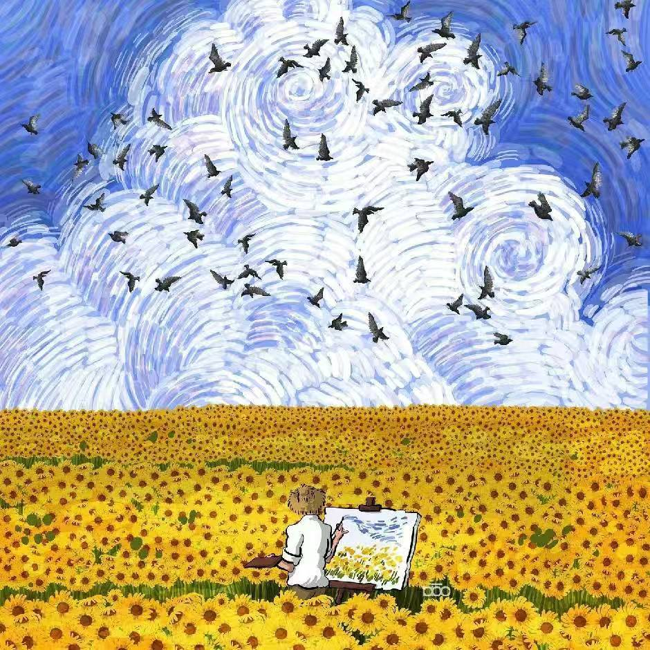

Email: zhaoqiucheng@mail.nwpu.edu.cn
Qiucheng Zhao 赵邱诚
I am a junior undergraduate student from the School of Mechanical Engineering, Northwestern Polytechnical University, majoring in Mechatronic Engineering. My hobbies are badminton, marathons, and movies; and I have academic interests in mathematics, mechanics, and robotics.
During my postgraduate study, I hope to engage in research related to the following aspects:
- Environmental perception and modeling of robots or UAVs
- Force control of robots
- Motion control of robots
A journey of a thousand miles begins with a single step ! 😉